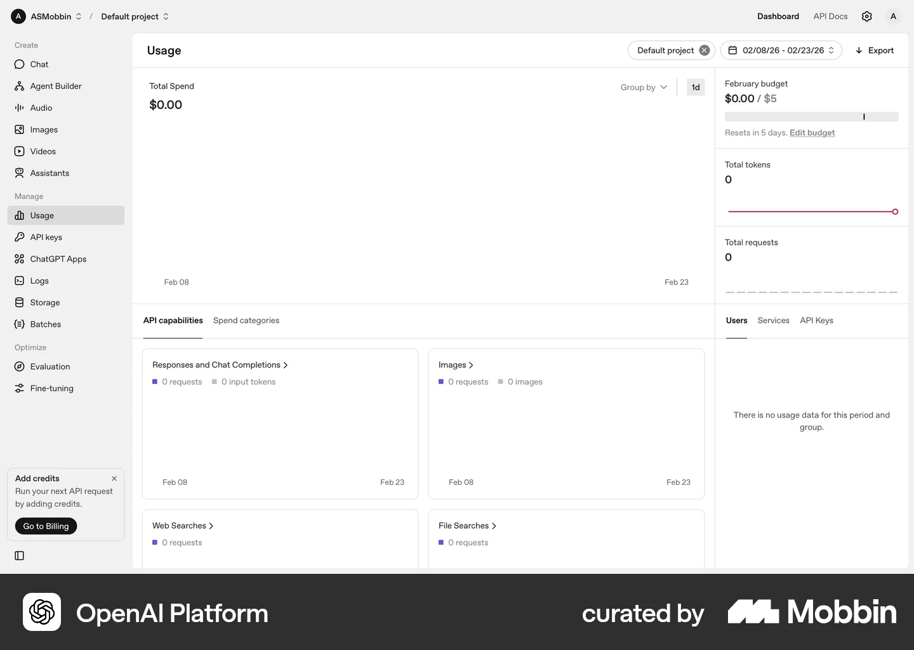

OpenAI PlatformCore
Usage and budget overview
Read spending authority alongside usage
- Observed in the preview
- Total spend occupies the main panel. A side column separates the budget amount, reset timing, token count and request count. Project and date filters remain above the panels.
- Proposed for AgentPay
- Place financial totals above the workflow and owner limits alongside it. Label token units and the exact budget scope; show available funds separately from spending authority.
- Scope and limits
- This screenshot shows a monthly budget presentation. It does not establish a hard enforcement guarantee. AgentPay's implemented budget is cumulative and has no automatic monthly reset.